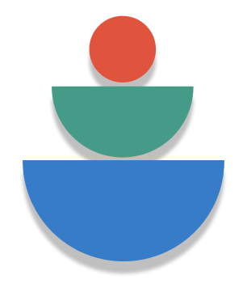
A budgeting app that turns every purchase into a quick gut-check: was this a want, or a need? Mindful Spending makes budgeting feel less like punishment and more like a habit.
The Challenge
Most budgeting apps only show what you spent — after it's gone. The moment that matters, right before you buy, gets no attention.
The Approach
Move the reflection to the point of purchase: log it, label it want or need, and note how it felt — building awareness in seconds.
Log a purchase
Record your purchase including pricing, items, category, and location.
Want or need?
Reflect on the necessity of this item — how do you feel, was it necessary?
See the patterns
History and category breakdowns show where money really goes.
Plan & price-match
Set budgets, save wants for later, and check for a better price.
Save-for-later list
Park impulse buys — most wants quietly fade within a week.
Budget tracker
A live budget tracker that keeps your monthly targets always visible.
Key screens
A look through the redesigned app.
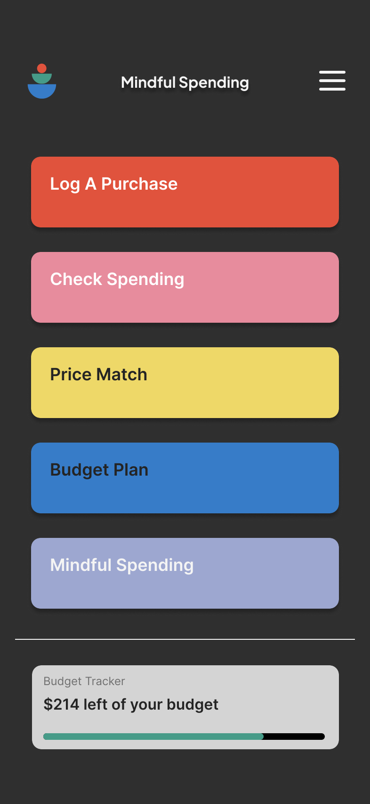
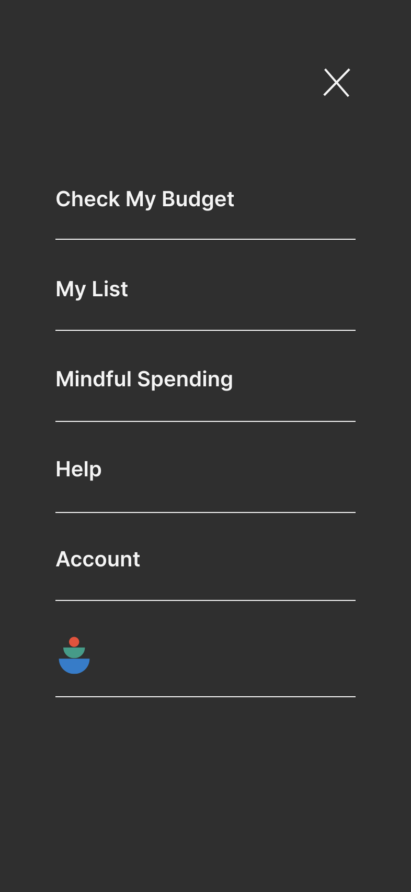
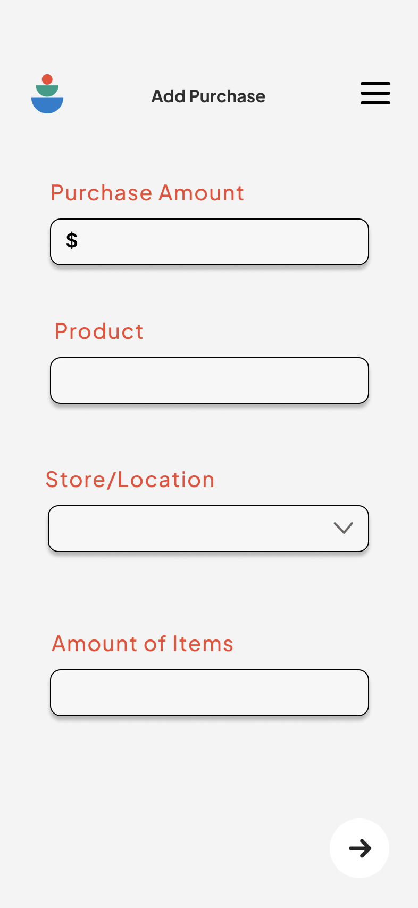
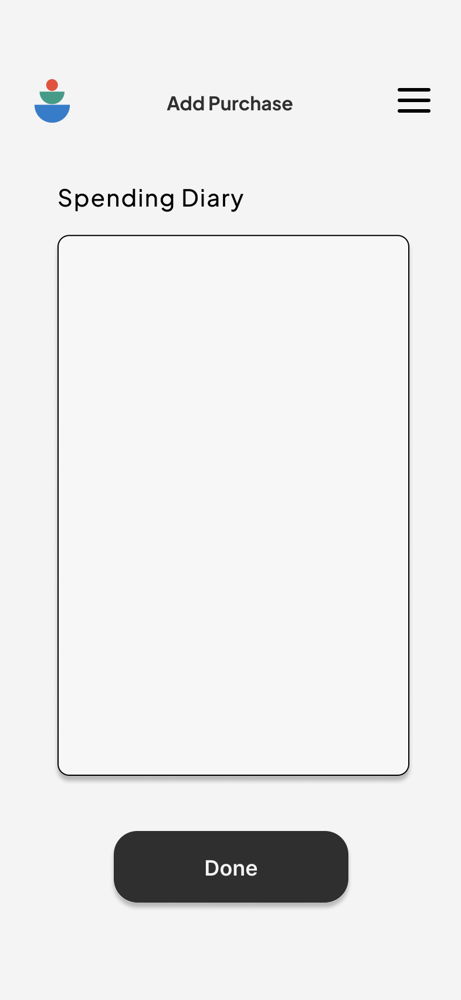
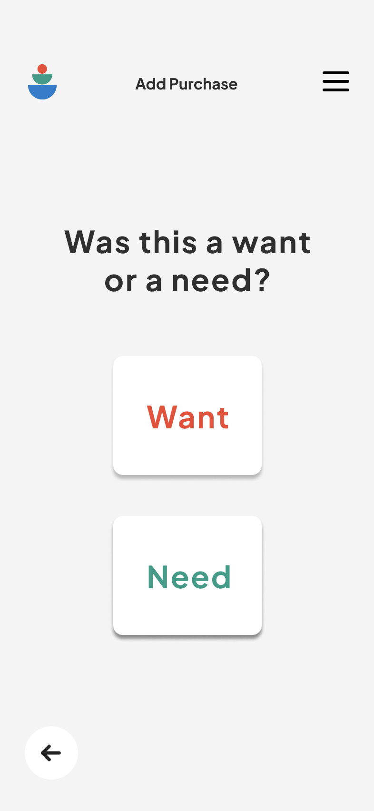
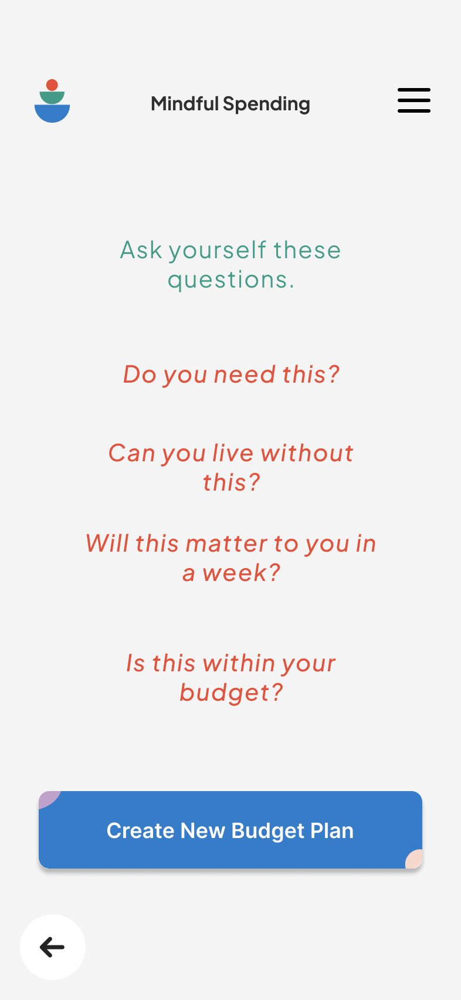
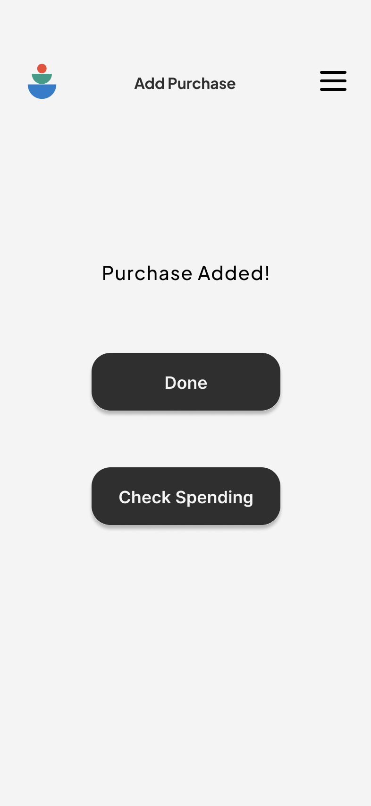
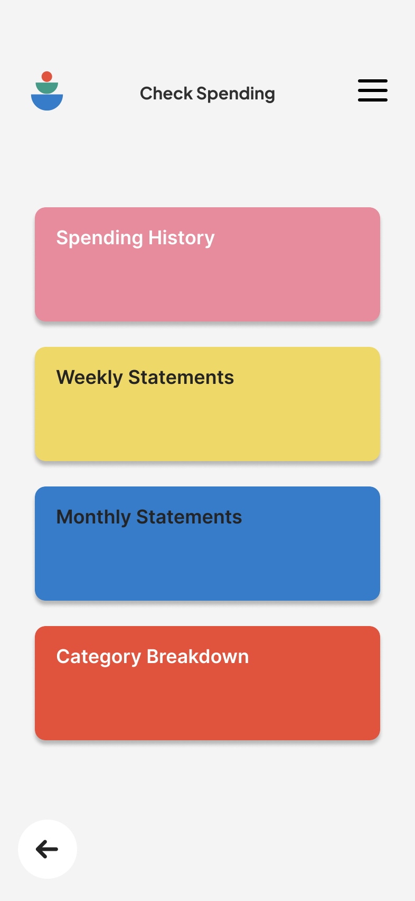
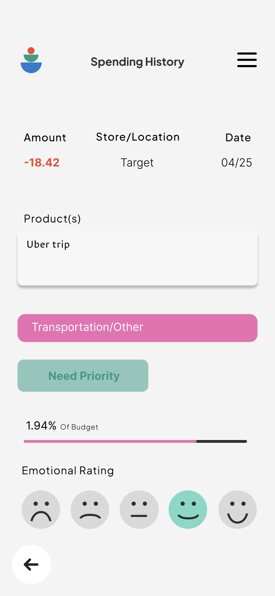
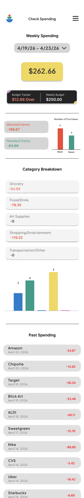
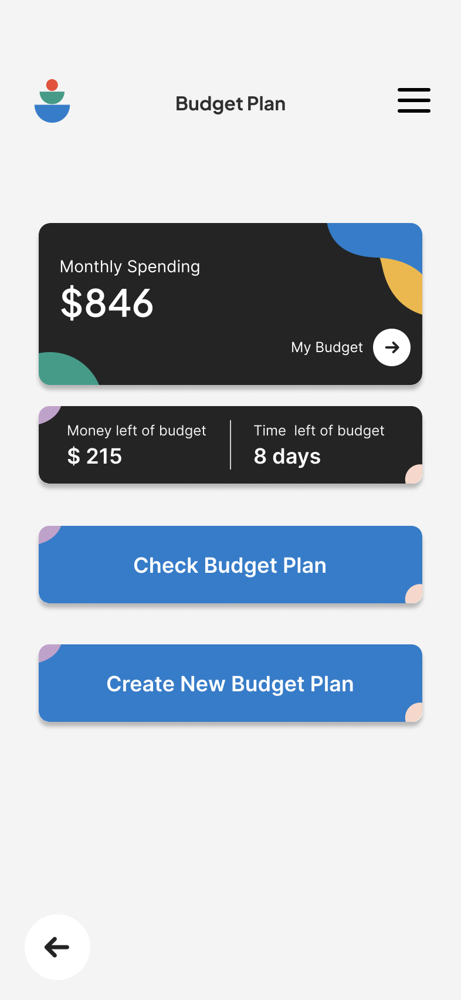
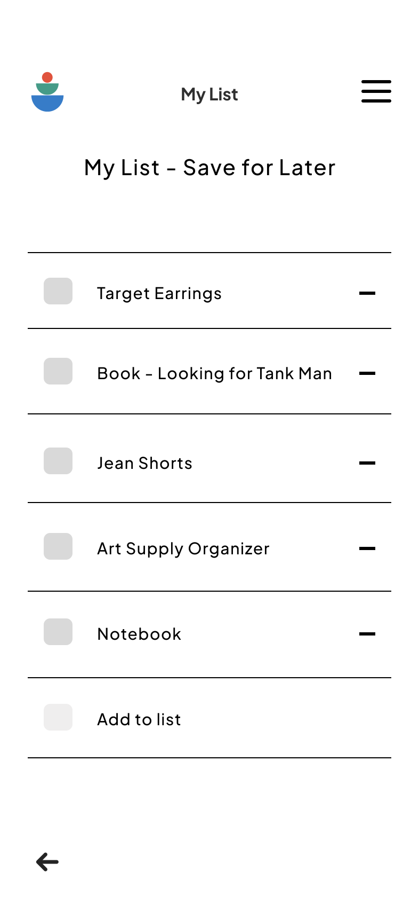
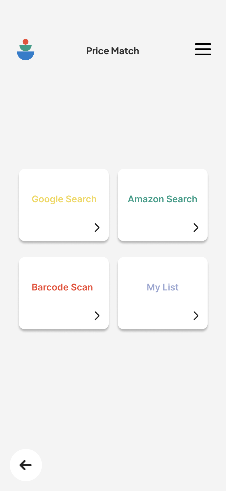
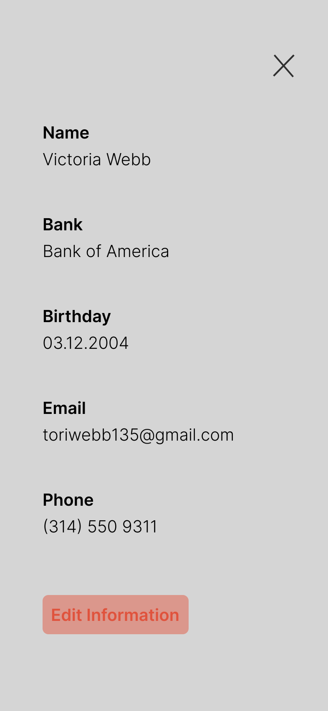
A calm, confident palette.
made for your needs